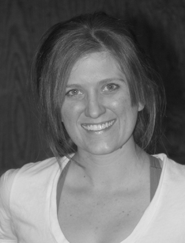

Number
12
What does your name mean?
I’d have to tell you in private...but lets just say it’s dirtier than I play.
Favorite Position
Blocker/Jammer
Theme Song
Heads Will Roll - Yeah Yeah Yeahs
When did you join?
March 2011
Why did you join and what keeps you going?
I have always enjoyed sports and challenges and this meets both of those needs. I keep going because I’m competitive, with others and myself. Also, I’m in love with derby! How can you not be? It’s a great sport with great people.
Favorite thing about derby?
Not only can I hit people and not get arrested, but hitting is encouraged and reinforced.
Least favorite thing about derby?
When people find out and say “you, play roller derby.”
Favorite thing about my team?
They’ve become my family. If I’m not with them for practice, doing some event together or just hanging out with them, I’m usually telling my bio family and co-workers about practice or an event we just did.
Bio
My other name is Kristy, I am a counselor (mental health) and mainly work with adolescents and their families. I love my job but it can be high stress, so derby has provided me with a wonderful outlet where I can relieve stress, challenge myself physically, and spend time with probably some of the most wonderful people I’ve ever met. Going into derby I didn’t know what to expect, especially from the other skaters. In fact I was super intimidated at first, but I can honestly say I have never felt so welcomed by a group than I have with IMRG.